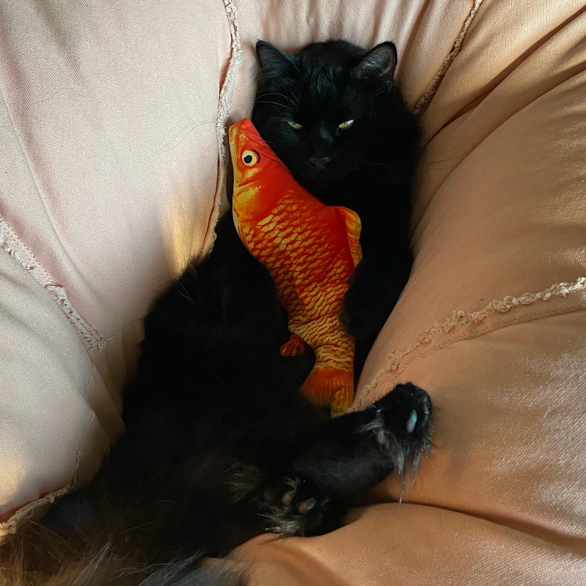
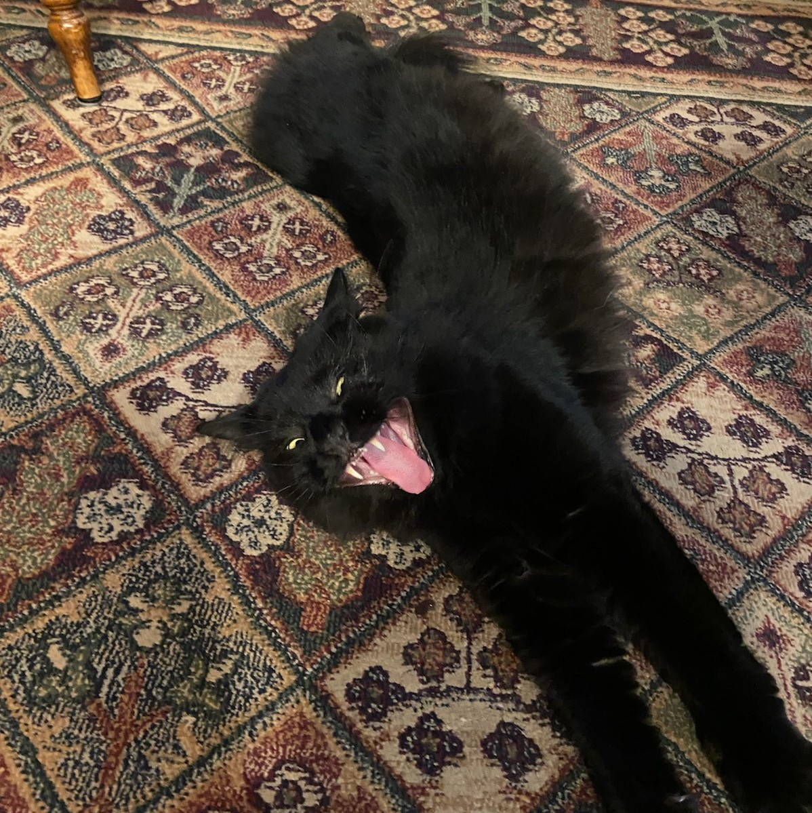
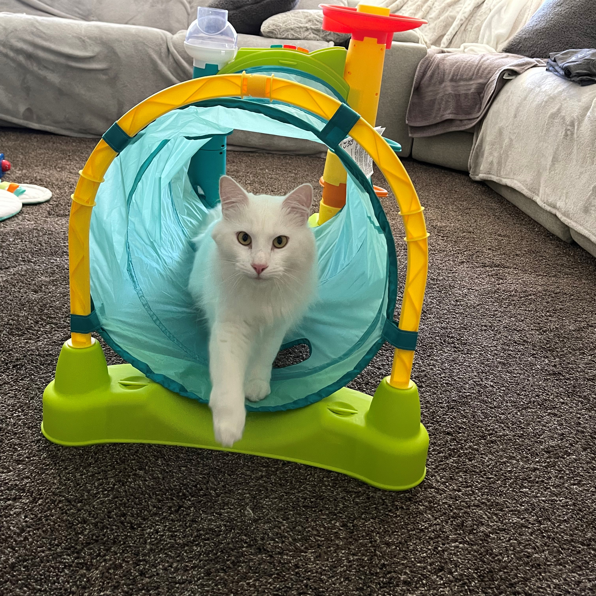
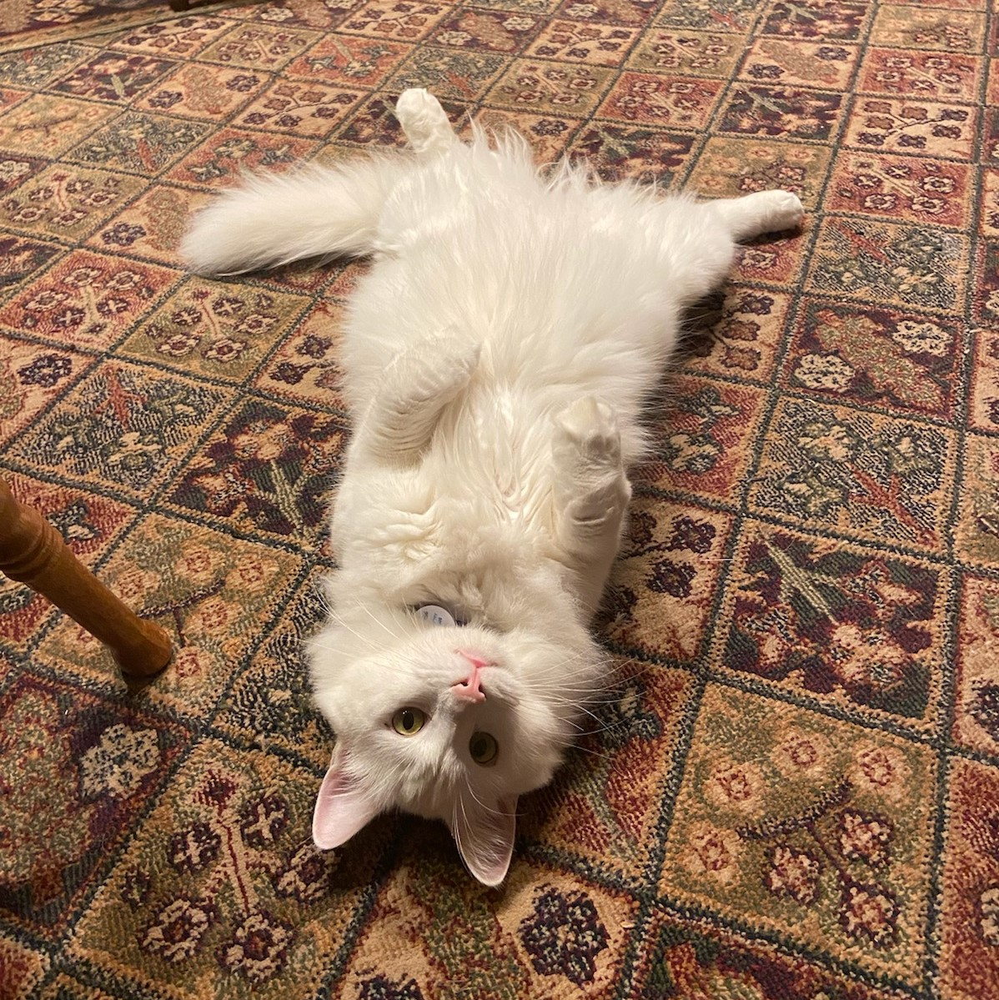
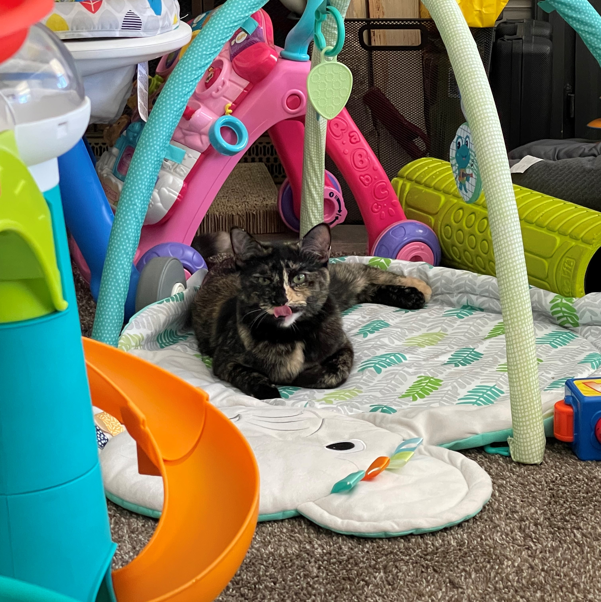
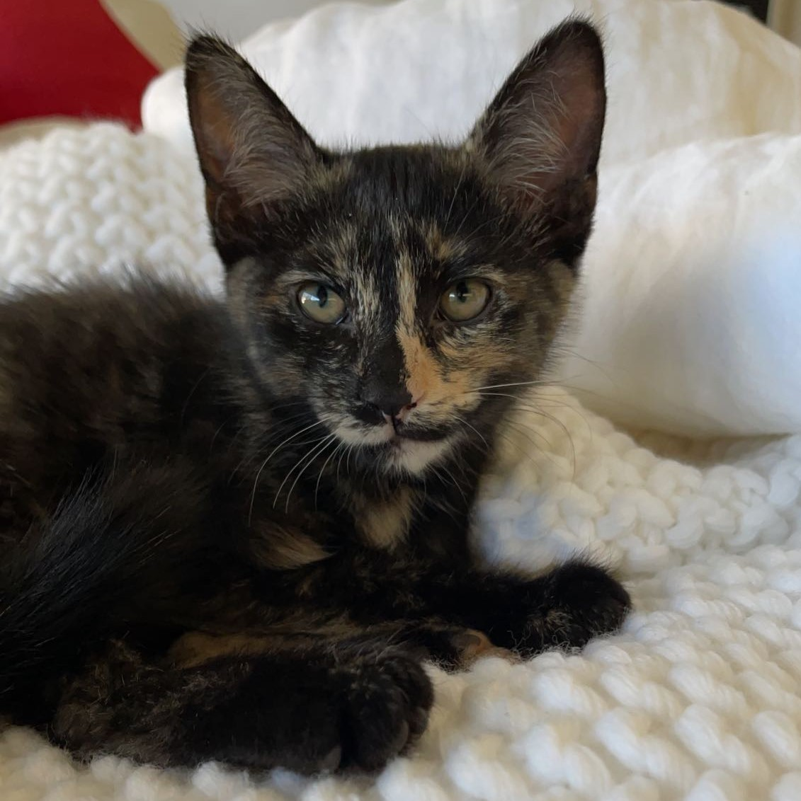

Salem is the cat I have wanted for a long time as black cats are usually neglected because of their connection to bad luck. He is the sweetest cat and loves to play with laser pointers and loves to be held with some head scratches. His favorite activity is looking out the window staring at the birds.

Wyatt and Salem came as a pair from the rescue and I could not be more grateful for it. He ism extremely cuddly and loves to be adorable everyday while laying in bed with me demanding pets. His favorite activity is eating and relaxing in the sun.

I found Kyoshi on the streets as a tiny kitten and knew I had to take her in immediately. She has been a burst of energy in our little cat family and makes demands by intensely meowing at all hours she feels. She makes up for it in her beauty, cuddles, and nose kisses. Her favorite activty is destroying blinds so she can have the perfect spot to people watch out the windows.